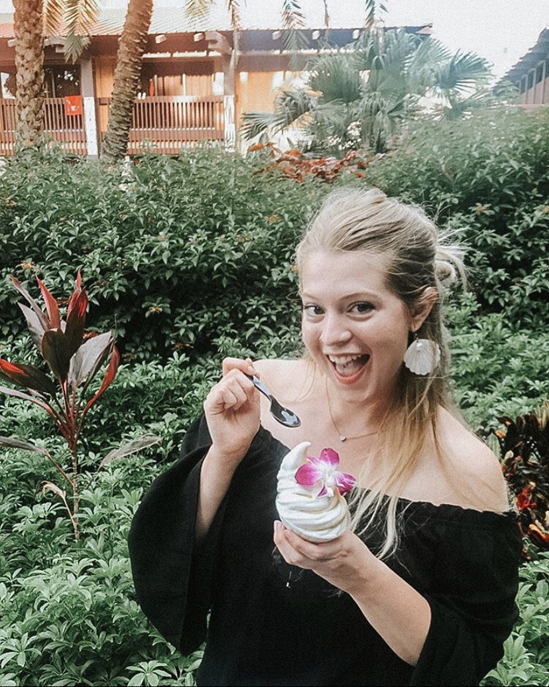

Hi, I'm Sine Wilt

Personalize Theme
What I Do
I performed as a mermaid and made custom mermaid crowns and tails. Now, I am painter and digital artist.
I performed as a mermaid and made custom mermaid crowns and tails. Now, I am painter and digital artist.
I started my career as a performer for local events from 2010-2019 while studying Studio Art with an emphasis on Painting and Drawing at West Texas A&M
In 2019, I moved to Florida to work at Disney as a cosmetologist and wig designer.
Painter and digital artist with a focus in portraits, abstract, and line drawing.